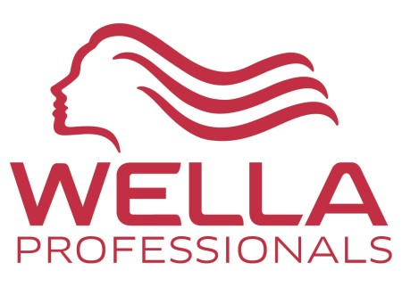
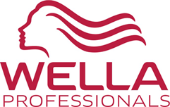

홈 > 브랜드 매거진 > 웰라
웰라
웰라(Wella)는 1880년 독일에서 시작된 전문가용·소비자용 헤어케어 브랜드이다.
산업 분야 뷰티·퍼스널케어 · 공개 등급 자료 기반 · 브랜드 평가 4.3 ★


한눈에 보는 브랜드
웰라(Wella)는 1880년 독일 작센 포크틀란트에서 미용사 프란츠 슈트뢰허(Franz Ströher)가 가발·인조모 제작소로 출발시킨 전문가용 헤어케어 브랜드다. 1924년 '물결'을 뜻하는 웰라 상표를 등록한 뒤 펌·염모·살롱 장비로 영역을 넓혔고, 콜레스톤(Koleston) 염모제로 살롱 컬러 시장의 기준을 세웠다.
현재는 사모펀드 KKR이 다수 지분을 보유한 웰라 컴퍼니 산하 핵심 브랜드로, OPI·ghd·세바스찬 등과 함께 세계 헤어케어 상위권 규모를 형성하고 있다.
브랜드 관점
핵심 경쟁축은 로레알 프로페셔널, 헨켈의 슈바르츠코프와 맞물린 살롱 전문가 채널이다. 로레알이 2024년 전문가 부문 점유율 약 26%로 선두를 지키는 반면, 웰라는 콜레스톤·일루미나를 앞세운 컬러 기술력과 헤어드레서 교육 네트워크로 차별화한다.
일반 소비재 유통보다 살롱 디자이너를 직접 공략하는 B2B2C 구조가 강점이며, 이는 미용사의 손기술·신뢰를 매출로 전환하는 구조다. 1880년 가족기업에서 2003년 P&G, 2016년 코티를 거쳐 2021년 KKR로 분리된 이력은 대형 소비재 그룹의 비핵심 사업이 사모펀드 손에서 독립 헤어 전문기업으로 재편된 사례로 읽힌다.
한국에서는 콜레스톤 퍼펙트 플러스가 동네 미용실 염색의 표준 라인으로 자리 잡았고, 서울에 세계 아홉 번째 웰라 월드 스튜디오를 열어 디자이너 교육·살롱 성장 거점으로 활용하는 점이 시장 무게를 보여준다.
시작과 성장
창업주 프란츠 슈트뢰허는 1880년 26세에 아우어바흐 지방법원에 인조모 제작 사업을 등록하며 출발했다. 직물업이 발달한 지역의 숙련 인력을 바탕으로 가발과 헤어피스를 만들었고, 영국에서 찾은 소재에 자체 방수 가공을 더한 '튈레모이드'가 세기 전환기에 성공을 거두며 1904년 로텐키르헨에 대형 공장을 세웠다.
1924년 슈트뢰허 가문은 물결을 뜻하는 웰라 상표를 출원했고, 1927년부터 펌 기계·드라이어·살롱 가구를 이 이름으로 생산했다. 이후 콜레스톤 염모제로 전문가 컬러 영역에 진입해 세계 살롱으로 확장했다.
소유 구조는 2003년 미국 P&G의 인수, 2016년 코티로의 전문가 사업 이관, 그리고 2021년 사모펀드 KKR로의 분리 매각을 거치며 독립 법인 웰라 컴퍼니로 재편됐다.
브랜드 아이덴티티
브랜드 정체성의 뿌리는 상표명 그대로 '물결(wave)'이다. 로고는 바람에 나부끼는 곱슬머리 여성의 옆얼굴을 형상화했고, 펌에서 출발한 의미가 이후 헤어케어 전반으로 확장됐다.
1991년 적색·백색 색상 체계가 도입돼 정제됐고, 2009년에는 글자가 곧게 펴진 넓고 단단한 산세리프로 다듬어져 절제된 인상을 갖췄다. 살짝 가라앉은 적색은 열정과 전문성을, 흰색은 안정감을 상징한다.
타깃은 일반 소비자가 아니라 살롱 디자이너와 헤어드레서이며, 따뜻함과 전문성을 함께 담은 어조로 미용사의 창의성과 커리어 성장을 지지하는 동반자 화법을 쓴다.
제품과 서비스
중심 제품은 콜레스톤 퍼펙트 영구 염모제로, 140여 색조와 흰머리 커버, 모발 손상을 줄이는 기술을 내세운다. 일루미나 컬러, 웰록손 디벨로퍼, 블론더 탈색 라인이 컬러 포트폴리오를 이루고, SP 시스템·오일 리플렉션·인비고가 살롱 케어를 담당한다.
그룹 차원에서는 세바스찬 프로페셔널, 니옥신, OPI, ghd가 함께 묶인다. 가격대는 60ml 염모제가 해외 기준 일만 원 중후반대로, 일반 소매가 아닌 면허 보유 전문가용 살롱 채널과 전용 스토어로 공급되는 점이 특징이다.
현재 상태
현재 소유주는 사모펀드 KKR이며, 운영 주체는 독립 법인 웰라 컴퍼니다. 본사는 스위스 제네바 프티랑시에 있다.
코티는 2025년 12월 잔여 지분 25.8%를 약 7억 5천만 달러에 KKR로 매각하며 완전히 철수했고, 향후 매각·상장 시 일부 수익 권리는 남겼다. 2024년에는 애니 영-스크리브너 CEO가 사임하고 글렌 머피 이사회 의장이 집행 의장으로 경영을 맡았으며, F1 아카데미 공식 파트너십과 지속가능 처방 전환을 추진했다.
비상장 사모펀드 보유 구조 특성상 웰라 단독의 정확한 연간 매출 수치는 공식적으로 공개되지 않았다.
타임라인
BI/CI 변천사

대표 로고대표 브랜드 마크함께 읽을 브랜드
키엘(Kiehl's)은 1851년 미국 뉴욕에서 약방으로 출발한 스킨케어 브랜드다. 옛 약제상(apothecary) 헤리티지를 바탕으로 한 미니멀한 제품으로 알려졌으...
 뷰티·퍼스널케어 · 자료 기반달바
뷰티·퍼스널케어 · 자료 기반달바달바는 2016년 비모뉴먼트라는 이름으로 출발한 프리미엄 비건 스킨케어 브랜드다. 이탈리아 피에몬테 알바의 화이트 트러플을 핵심 성분으로 내세워 '이탈리안 뷰티'를...
 뷰티·퍼스널케어 · 매거진 완성러쉬
뷰티·퍼스널케어 · 매거진 완성러쉬러쉬는 영국의 뷰티·퍼스널케어 브랜드로, 성분, 사용감, 패키지, 이미지 언어가 구매 판단에 직접 연결되는 영역입니다.
 뷰티·퍼스널케어 · 편집 검수도브
뷰티·퍼스널케어 · 편집 검수도브도브(Dove)는 유니레버가 1957년 출시한 비누·바디케어 퍼스널케어 브랜드이다.
 뷰티·퍼스널케어 · 편집 검수베네피트
뷰티·퍼스널케어 · 편집 검수베네피트베네핏 코스메틱스(Benefit Cosmetics)는 1976년 쌍둥이 자매 진·제인 포드가 미국 샌프란시스코에서 창업한 화장품 브랜드로, 1999년 LVMH가 인수...
RN
롬앤
뷰티·퍼스널케어 · 자료 기반롬앤롬앤(rom&nd)은 아이패밀리에스씨가 2016년 론칭한 대한민국의 색조 화장품 브랜드다. 립틴트·아이섀도를 중심으로 10·20대에게 인기를 얻은 메이크업 브랜드다.
 뷰티·퍼스널케어 · 자료 기반설화수
뷰티·퍼스널케어 · 자료 기반설화수설화수(Sulwhasoo)는 아모레퍼시픽이 1997년 론칭한 대한민국의 한방 럭셔리 스킨케어 브랜드다. 한방 원료와 프리미엄 포지셔닝으로 아모레퍼시픽을 대표하는 럭셔...
 뷰티·퍼스널케어 · 자료 기반아누아
뷰티·퍼스널케어 · 자료 기반아누아아누아(Anua)는 더파운더즈가 전개하는 대한민국의 저자극 스킨케어 브랜드다. 어성초를 핵심 성분으로 한 진정 토너로 미국·일본 등에서 인기를 얻은 K-뷰티 브랜드다...